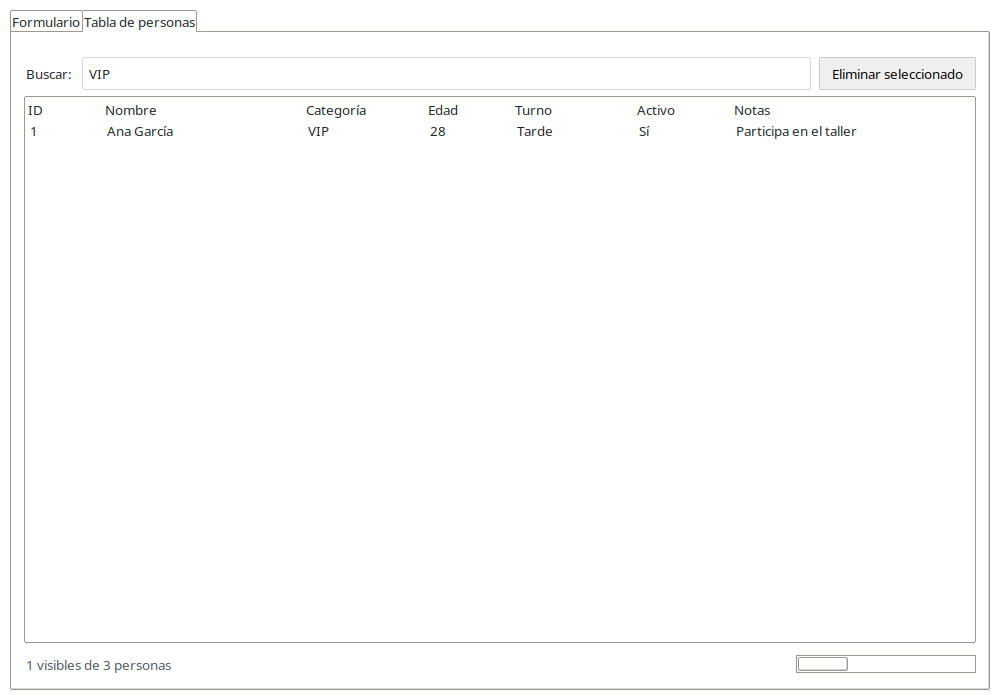

Empieza por el Notebook con dos pestañas vacías. Completa y prueba Formulario; después completa y prueba Tabla de personas. Añade los acabados al final.
Antes de empezar
Necesitas conocer variables, listas, diccionarios, funciones y la idea básica de una clase. El objetivo es separar el diseño visual (archivos .ui), el comportamiento (clases Python) y los datos (lista en memoria).
Preparar Python y el entorno virtual
Crea una carpeta llamada EjercicioClase y abre una terminal dentro de ella. En los siguientes pasos crearemos app.py y los demás archivos desde cero. Necesitas Python 3.10 o posterior con Tkinter. Crearemos una carpeta .venv exclusiva de este ejercicio. Crea el entorno una sola vez; actívalo cada vez que abras otra terminal.
Windows — CMD
py -m venv .venv
.venv\Scripts\activate.bat
Windows — PowerShell
py -m venv .venv
.\.venv\Scripts\Activate.ps1
En Windows se usa activate, sin source. Si PowerShell bloquea la activación, utiliza CMD con el comando anterior.
Partimos de una carpeta de trabajo vacía: no necesitas descargar un archivo requirements.txt. Con el entorno activado, instala estos paquetes adicionales: pygubu-designer instala el editor visual y la biblioteca pygubu que carga los archivos .ui; ttkbootstrap proporciona los temas y estilos de la ventana. tkinter pertenece a la biblioteca estándar de Python y no se instala con pip; debe estar disponible en tu instalación de Python. La instalación de paquetes se realiza una vez por entorno. Después de activarlo usamos python en los tres sistemas.
Comprueba el intérprete:
python -c "import sys; print(sys.executable)"
La ruta debe apuntar a la carpeta .venv de este ejercicio. Para cerrar el entorno escribe deactivate. Para volver otro día, activa el entorno existente; no hace falta crearlo otra vez.
Para comprobar Tkinter ejecuta python -m tkinter. Si falta en Linux, instala el paquete Tkinter de tu distribución; si no está disponible venv, instala también el paquete correspondiente. Este entorno es independiente del de la carpeta superior.
Mini manual de Pygubu Designer
Pygubu Designer es el editor visual con el que construiremos las pantallas. Añadimos controles, les damos nombre y configuramos su aspecto, posición y eventos. El resultado se guarda en un archivo .ui. El comportamiento se escribe en los archivos .py con nuestro editor de código; después Builder carga la pantalla y conecta sus métodos.
Con el entorno activado, abre el editor con pygubu-designer. Al trabajar desde cero verás un documento vacío. Las siguientes pantallas muestran dónde estará cada panel cuando añadamos un control.
Mostrar la jerarquía: qué control está dentro de qué contenedor. Seleccionar el elemento que se va a editar.
Antes de añadir un control seleccionamos su padre: formulario, acciones, tabla, etc.
Propiedades · centro inferior
Editar el control seleccionado mediante Apariencia, Disposición y Bindings.
El contenido cambia según la clase del control. Usa las barras de desplazamiento para ver las propiedades que quedan fuera del panel.
Previsualización · derecha
Ver el resultado del diseño y la posición del control seleccionado.
Comprobar que los controles están en el contenedor y la celda correctos. Para comprobar la lógica ejecutaremos app.py.
Apariencia: qué es el control y qué muestra
Selecciona un control en el árbol y pulsa Apariencia. Aquí editamos su ID, texto, opciones y tamaño solicitado. No todos los controles tienen las mismas propiedades.
Propiedad
Qué significa
Ejemplo de este programa
class
La clase del componente que has añadido.
ttk.Label para un texto, ttk.Entry para escribir; ttk.Treeview.Column para una columna de la tabla.
id
Nombre que identifica el control. Debe coincidir con el que usa Python.
nombre, categoria, edad, guardar, tabla. Python lo recupera con get_object("nombre").
text
Texto visible de una etiqueta, botón o pestaña.
Nombre *, Añadir a la tabla, Formulario.
padding
Espacio interior entre el borde del contenedor y su contenido.
aplicacion: 10; pantalla_formulario y formulario: 12.
values
Opciones que ofrece el Combobox.
En categoria: {General} {VIP} {Prensa}.
state
Estado del control. readonly permite seleccionar sin escribir un valor libre en el Combobox.
categoria: readonly.
from_ / to
Límites del Spinbox. No sustituyen la validación desde Python.
edad: de 0 a 120.
width / height
Tamaño solicitado; su unidad depende del control. La distribución puede estirarlo después.
edad: width 8 caracteres; notas: width 30 caracteres y height 3 líneas; tabla: height 8 filas de datos.
value
Valor que representa un Radiobutton cuando está seleccionado.
turno_manana: Mañana; turno_tarde: Tarde. Su variable común se conecta en Python.
show
Qué partes muestra el Treeview.
tabla: headings, para mostrar los encabezados sin la columna de árbol.
width de una columna
Ancho solicitado de una columna del Treeview, en píxeles.
col_id: 55; col_nombre: 180; col_notas: 220.
style
Nombre de un estilo que definiremos desde Python.
DemoTitulo.TLabel y DemoEstado.TLabel.
image
Archivo de imagen que muestra un Label.
imagen_animada: ../images/registro_animado.gif. Lo añadiremos al final.
length / maximum
Longitud visual y valor máximo de la Progressbar. Son conceptos distintos.
progreso: length 180 px y maximum 10 personas.
command · Callback / Type
Método que ejecuta un botón cuando lo pulsamos y modo de llamada.
guardar: Callback guardar_persona y Type Simple; sin paréntesis.
Callback significa «método que se ejecutará al realizar una acción». En los botones usaremos Simple: por ejemplo, def guardar_persona(self):. Escribir el nombre en Designer no crea el método: tendremos que programarlo y llamar a connect_callbacks(self).
Disposición: dónde va el control y cómo ocupa su espacio
Pestaña Disposición del Combobox categoria: configuración de su posición dentro del formulario.
Esta pestaña organiza el control dentro de su padre inmediato. Usaremos grid para colocar los controles en filas y columnas. Dentro de opciones_turno y acciones usaremos pack para poner elementos uno detrás de otro.
Propiedad
Qué significa
Ejemplo de este programa
manager: grid / pack
Sistema que coloca al control dentro de su padre.
grid para los campos; pack con side left para los turnos y los botones de acciones.
row / column
Fila y columna de la celda; se cuentan desde 0. Cada contenedor tiene su propia cuadrícula.
categoria: row 0 y column 3, dentro de formulario.
columnspan / rowspan
Número de columnas o filas que ocupa un control.
notas empieza en column 1 y ocupa columnspan 3; acciones ocupa columnspan 4.
sticky
Bordes de la celda a los que se pega el control: n arriba, s abajo, e derecha, w izquierda.
w: alinear a la izquierda; ew: estirar horizontalmente; nsew: estirar en ambas direcciones.
padx / pady
Espacio exterior alrededor del control, en píxeles. Un valor se aplica a ambos lados; dos valores indican cada lado por separado.
padx 4: 4 a izquierda y derecha. pady 12 6: 12 arriba y 6 abajo.
side, con pack
Lado en el que se añade el control al espacio que queda en su contenedor.
side left para Mañana y Tarde, y para los botones guardar y limpiar.
weight de fila o columna del contenedor
Reparto del espacio sobrante. 0 conserva el tamaño solicitado; 1 permite recibir espacio adicional.
En formulario crecen las columnas 1 y 3. En pantalla_tabla crece la fila 1, que contiene el Treeview.
Ejemplo:categoria va en fila 0, columna 3 y usa sticky = ew. Para que se ensanche con la ventana también damos weight = 1 a la columna 3 de su padre, formulario. Sticky estira el widget dentro de su celda; weight permite que la celda crezca.
Los controles hermanos de un mismo padre deben usar el mismo gestor. Se puede usar grid en formulario y pack dentro de su Frame acciones: son contenedores distintos.
Pestaña Bindings del Combobox categoria: el evento ComboboxSelected se conecta al handler cambio_categoria.
Un binding conecta un evento con un handler, el nombre del método Python que lo atiende. En la pestaña Bindings añadimos una fila con ambos valores. El evento se escribe con sus símbolos < > tal como aparece en la tabla.
Control
Evento
Handler y uso
pestanas
<<NotebookTabChanged>>
al_cambiar_pestana: reaccionar al cambiar de pestaña.
categoria
<<ComboboxSelected>>
cambio_categoria: actualizar el título al elegir una categoría.
buscar
<KeyRelease>
filtrar_tabla: actualizar el filtro al soltar una tecla.
tabla
<<TreeviewSelect>>
seleccionar_persona: mostrar el ID de la fila seleccionada.
imagen_animada
<Destroy>
detener_animacion: cancelar el temporizador al destruir el Label.
Los handlers de bindings reciben el evento, por ejemplo def cambio_categoria(self, _evento=None):. Los botones de este ejercicio usan command en Apariencia y sus métodos simples no reciben evento. No pongas paréntesis en el nombre del handler.
Rutina que repetiremos con cada control
Seleccionar el contenedor padre en el árbol.
Añadir la clase de control desde la paleta.
Seleccionar el nuevo control y cambiar su ID en Apariencia.
Configurar únicamente las propiedades indicadas en el paso del tutorial.
Configurar su posición en Disposición y, si corresponde, añadir sus Bindings.
Comprobar la previsualización y guardar el archivo .ui.
Al terminar el diseño, escribir sus métodos Python y ejecutar la aplicación para probar el comportamiento.
1. Crear el Notebook y sus dos pestañas vacías
Cómo leer las medidas: padding, padx y pady se expresan aquí en píxeles; width de los campos de texto se expresa en caracteres y height del Text en líneas. Los anchos y altos visibles dependen de la fuente, el tema y el espacio disponible. sticky estira el control dentro de su celda; weight permite que la fila o columna reciba espacio adicional.
Plano del diseño principal · ui/principal.ui
Lee primero este plano: las filas y columnas empiezan en 0 y se cuentan dentro de cada contenedor. Las cajas muestran posiciones; el dibujo no está a escala.
Ventana: 850 × 650 px · mínimo: 800 × 550 px
aplicacion · padding interior: 10 px
Columna 0 · weight = 1
Fila 0
pestanas · ttk.Notebooksticky = nsew · ocupa el espacio disponible
FormularioTabla de personas
contenedor_formularioFrame vacío al comenzar
contenedor_tablaFrame vacío al comenzar
Las dos cajas inferiores representan las páginas del Notebook: se ve una cada vez. Las pestañas del Notebook no se colocan con row y column; su Frame interior recibirá su propia UI.
Elemento
Tamaño o separación configurada
aplicacion: fila 0 y columna 0
weight = 1 en ambas: reparten el espacio sobrante.
pestanas
Sin ancho ni alto fijos; sticky = nsew lo estira en ambas direcciones.
Pestañas
Sus títulos determinan el tamaño de las solapas; sus páginas ocupan el área disponible.
Empezamos por principal.ui: un Notebook con las pestañas Formulario y Tabla de personas, cada una con su Frame contenedor. Primero lo cargamos desde app.py y comprobamos que se puede cambiar de pestaña. A continuación completaremos cada pestaña por separado.
1.1. Reconocer las zonas de trabajo
Con el entorno activado, ejecuta pygubu-designer sin argumentos. Crea la carpeta ui dentro de EjercicioClase. En el editor pulsa Nuevo; luego Guardar y elige ui/principal.ui. Este archivo lo estás creando ahora.
Localiza la paleta de componentes: desde ella se añaden Frame, Label, Entry y los demás widgets. Puedes filtrar por su nombre.
Localiza el árbol de widgets: muestra quién contiene a quién. Antes de añadir un control, selecciona aquí su contenedor padre.
Localiza el editor de propiedades del elemento seleccionado: cambia su identificador (ID) y sus propiedades como text, padding o values.
Localiza el editor de distribución (Layout): aquí se elige grid o pack y se ajustan fila, columna, sticky y márgenes. Las opciones de distribución del contenedor permiten dar peso a filas y columnas.
Localiza el editor de bindings: aquí se asocia un evento con el nombre de su handler. Las etiquetas del editor pueden estar en inglés según el idioma instalado.
1.2. Crear el Notebook y los contenedores
Con ui/principal.ui nuevo y vacío, añade los siguientes seis componentes en este orden. Después de cada pantalla configura solamente las propiedades indicadas; deja las demás con sus valores predeterminados.
1.2.1. Frame principal
En el documento vacío, busca ttk.Frame en la paleta y añádelo como raíz. Selecciona el componente nuevo para editar sus propiedades.
Frame principal añadido; aplicacion seleccionado en el árbol.
Propiedades que cambiamos:
Panel
Propiedad
Valor que escribimos
Apariencia
id
aplicacion
Apariencia
padding
10
Distribución del contenedor
column 0 · weight
1
Distribución del contenedor
row 0 · weight
1
Este Frame es el contenedor de toda la aplicación. Sus pesos permiten que el Notebook crezca en horizontal y vertical. No fijes width ni height; su colocación en la ventana se programará con pack en app.py.
Comprueba y guarda: El árbol tiene una única raíz, aplicacion. Está vacía: el padding y los pesos se apreciarán cuando tenga contenido. Guarda ui/principal.ui.
1.2.2. Notebook
Selecciona aplicacion en el árbol. En la paleta añade ttk.Notebook. Selecciona el componente nuevo para editar sus propiedades.
Notebook añadido; pestanas seleccionado en el árbol.
Propiedades que cambiamos:
Panel
Propiedad
Valor que escribimos
Apariencia
id
pestanas
Disposición
sticky
nsew
Bindings
<<NotebookTabChanged>>
al_cambiar_pestana
En Disposición usa grid y conserva row = 0 y column = 0. sticky = nsew hace que ocupe toda su celda. En Bindings añade el evento indicado; escribiremos su método en app.py después de terminar el diseño.
Comprueba y guarda: pestanas aparece directamente bajo aplicacion. Todavía no muestra las solapas: faltan las pestañas. Guarda ui/principal.ui.
1.2.3. Pestaña «Formulario»
Selecciona pestanas en el árbol. En la paleta añade ttk.Notebook.Tab. Selecciona el componente nuevo para editar sus propiedades.
Pestaña «Formulario» añadido; tab_formulario seleccionado en el árbol.
Propiedades que cambiamos:
Panel
Propiedad
Valor que escribimos
Apariencia
id
tab_formulario
Apariencia
text
Formulario
Notebook.Tab configura una pestaña. Su padre Notebook gestiona su posición: no le asignes grid ni pack. Si la solapa aún no se ve en la previsualización, continúa con su Frame interior.
Comprueba y guarda: tab_formulario aparece bajo pestanas en el árbol. El Frame del siguiente paso completará el contenido de esta pestaña. Guarda ui/principal.ui.
1.2.4. Contenedor de la pestaña Formulario
Selecciona tab_formulario en el árbol. En la paleta añade ttk.Frame. Selecciona el componente nuevo para editar sus propiedades.
Contenedor de la pestaña Formulario añadido; contenedor_formulario seleccionado en el árbol.
Propiedades que cambiamos:
Panel
Propiedad
Valor que escribimos
Apariencia
id
contenedor_formulario
Conserva las demás propiedades predeterminadas. La pestaña gestiona este Frame; no le asignes una fila o columna. Más adelante PestanaFormulario cargará formulario.ui dentro de él.
Comprueba y guarda: contenedor_formulario queda dentro de tab_formulario y se ve la solapa «Formulario» con su página vacía. Guarda ui/principal.ui.
1.2.5. Pestaña «Tabla de personas»
Selecciona pestanas en el árbol. En la paleta añade ttk.Notebook.Tab. Selecciona el componente nuevo para editar sus propiedades.
Pestaña «Tabla de personas» añadido; tab_tabla seleccionado en el árbol.
Propiedades que cambiamos:
Panel
Propiedad
Valor que escribimos
Apariencia
id
tab_tabla
Apariencia
text
Tabla de personas
Selecciona de nuevo pestanas antes de añadirla: la segunda pestaña no debe quedar dentro de la primera. Su Frame interior se añade en el siguiente paso. Tampoco necesita grid ni pack.
Comprueba y guarda: tab_tabla aparece como segunda pestaña bajo pestanas, al mismo nivel que tab_formulario. Guarda ui/principal.ui.
1.2.6. Contenedor de la pestaña Tabla
Selecciona tab_tabla en el árbol. En la paleta añade ttk.Frame. Selecciona el componente nuevo para editar sus propiedades.
Contenedor de la pestaña Tabla añadido; contenedor_tabla seleccionado en el árbol.
Propiedades que cambiamos:
Panel
Propiedad
Valor que escribimos
Apariencia
id
contenedor_tabla
Deja las demás propiedades predeterminadas. Más adelante PestanaTabla cargará tabla.ui dentro de este Frame. Guarda principal.ui y continúa con la programación de app.py.
Comprueba y guarda: contenedor_tabla queda dentro de tab_tabla. Ya están las dos pestañas, cada una con un único Frame contenedor vacío. Guarda ui/principal.ui.
Jerarquía terminada: comprueba en el árbol que las dos pestañas son hermanas y que cada Frame está dentro de su pestaña.
Guarda ui/principal.ui. Crea ahora app.py en EjercicioClase y escribe este programa completo. Todavía no importamos formulario.py ni tabla.py: aún no los hemos creado.
Path calcula las rutas desde la ubicación de app.py.
Builder carga principal.ui y get_object recupera el Frame raíz.
pack coloca ese Frame y permite que ocupe la ventana.
connect_callbacks conecta el binding del Notebook con al_cambiar_pestana.
mainloop mantiene la ventana respondiendo a los eventos.
1.4. Probar la ventana y las pestañas
python app.py
Comprueba: aparecen las dos pestañas vacías. Al cambiarlas se imprime 0 o 1 en la terminal. Cambia el tamaño de la ventana: el Notebook debe crecer. Cierra la aplicación antes de continuar.
Siguiente: conserva app.py funcionando y las dos pestañas vacías. Ahora construiremos los controles de Formulario.
2. Completar y probar la pestaña Formulario
Plano de la pestaña Formulario · ui/formulario.ui
Lee primero este plano: las filas y columnas empiezan en 0 y se cuentan dentro de cada contenedor. Las cajas muestran posiciones; el dibujo no está a escala.
acciones → [Añadir a la tabla] [Limpiar formulario]column = 0 · columnspan = 4 · sticky = e · botones con pack, side = left
Elemento
Tamaño o separación configurada
Nombre, categoría, edad, turno, Activo y notas
En su grid: padx = 4 y pady = 5 px a cada lado correspondiente.
nombre y categoria
No se fija width: conservan su ancho solicitado y se estiran con sticky = ew.
edad
width = 8 caracteres; el alto depende de la fuente y del tema.
notas
width = 30 caracteres y height = 3 líneas: son tamaños solicitados; sticky = ew puede ensancharlo.
opciones_turno
Mañana y Tarde usan pack, no columnas grid. Mañana deja 12 px a la derecha.
acciones
pady = 8 0: 8 px arriba, 0 abajo. Cada botón tiene padx = 4 px a ambos lados.
imagen_animada
La fila 0 se reserva; no ocupa la altura del GIF hasta que se añada la imagen al final.
Al redimensionar
Las columnas 1 y 3 reciben ancho adicional. El formulario no tiene filas con weight = 1; no se estira verticalmente.
2.1. Empezar formulario.ui desde un diseño nuevo
Guarda principal.ui. Crea otro documento y guárdalo como ui/formulario.ui.
Añade un ttk.Frame raíz, ID pantalla_formulario, padding 12. En la distribución de su contenedor pon weight 1 para columna 0.
Selecciona la raíz y añade un ttk.Label llamado titulo. Text «Laboratorio Pygubu · Registro de personas», style DemoTitulo.TLabel. En Layout: grid, row 1, column 0, sticky w, pady «0 12».
Selecciona de nuevo la raíz y añade ttk.Labelframe con ID formulario. Text «Formulario», padding 12. En Layout: grid, row 2, column 0, sticky ew.
En las opciones del contenedor formulario configura las columnas 1 y 3 con weight 1. La fila 0 de la raíz queda reservada para la imagen.
Designer: título y marco del formulario, todavía sin campos.
2.2. Colocar los primeros campos
Selecciona el Labelframe formulario y añade un ttk.Label con ID etiqueta_nombre. Text «Nombre *». Layout: grid, row 0, column 0, sticky w, padx 4, pady 5.
Selecciona otra vez formulario y añade un ttk.Entry con ID nombre. Layout: grid, row 0, column 1, sticky ew, padx 4, pady 5.
Sobre el mismo padre añade un ttk.Label con ID etiqueta_categoria, text «Categoría», row 0, column 2, sticky w y los mismos márgenes.
Añade un ttk.Combobox con ID categoria en row 0, column 3, sticky ew. En values introduce las opciones General, VIP y Prensa (en formato de lista Tcl: {General} {VIP} {Prensa}). Pon state readonly.
Selecciona categoria y añade el binding <<ComboboxSelected>> con handler cambio_categoria.
Designer: Combobox seleccionado para configurar categoría y sus propiedades.
2.3. Añadir edad, turno, notas y botones
Continúa con ui/formulario.ui abierto y con nombre y categoría ya creados. Añade un solo control en cada paso y guarda antes de continuar. Debajo de cada pantalla se indican únicamente los valores que hay que cambiar; deja el resto como está.
2.3.1. Etiqueta «Edad»
Selecciona formulario en el árbol del proyecto. En la paleta añade ttk.Label y selecciona el nuevo control para editarlo.
Contenedor para las opciones de turno incorporado al formulario; opciones_turno seleccionado en el árbol.
Propiedades que cambiamos:
Panel
Propiedad
Valor que escribimos
Apariencia
id
opciones_turno
Disposición
row
1
Disposición
column
3
Disposición
sticky
w
Disposición
padx
4
Disposición
pady
5
En Disposición utiliza grid. Las filas y columnas se cuentan desde 0.
Comprueba y guarda: El Frame aparece bajo formulario en el árbol. Todavía no muestra texto: alojará los dos botones de opción. Guarda ui/formulario.ui.
2.3.5. Opción «Mañana»
Selecciona opciones_turno en el árbol del proyecto. En la paleta añade ttk.Radiobutton y selecciona el nuevo control para editarlo.
Opción «Mañana» incorporado al formulario; turno_manana seleccionado en el árbol.
Propiedades que cambiamos:
Panel
Propiedad
Valor que escribimos
Apariencia
id
turno_manana
Apariencia
text
Mañana
Apariencia
value
Mañana
Disposición
manager
pack
Disposición
side
left
Disposición
padx
0 12
text es lo que se ve; value es el dato que representará esta opción.
Comprueba y guarda: La opción «Mañana» aparece dentro de opciones_turno. Más adelante conectaremos la variable compartida desde Python. Guarda ui/formulario.ui.
2.3.6. Opción «Tarde»
Selecciona opciones_turno en el árbol del proyecto. En la paleta añade ttk.Radiobutton y selecciona el nuevo control para editarlo.
Botón «Añadir a la tabla» incorporado al formulario; guardar seleccionado en el árbol.
Propiedades que cambiamos:
Panel
Propiedad
Valor que escribimos
Apariencia
id
guardar
Apariencia
text
Añadir a la tabla
Apariencia
command
guardar_persona
Disposición
manager
pack
Disposición
side
left
Disposición
padx
4
En command, conserva el tipo de callback simple. Escribe el nombre del método sin paréntesis.
Comprueba y guarda: El botón aparece dentro de acciones. Por ahora comprobamos su colocación; la acción se probará al conectar el código Python. Guarda ui/formulario.ui.
2.3.12. Botón «Limpiar formulario»
Selecciona acciones en el árbol del proyecto. En la paleta añade ttk.Button y selecciona el nuevo control para editarlo.
Botón «Limpiar formulario» incorporado al formulario; limpiar seleccionado en el árbol.
Propiedades que cambiamos:
Panel
Propiedad
Valor que escribimos
Apariencia
id
limpiar
Apariencia
text
Limpiar formulario
Apariencia
command
limpiar_formulario
Disposición
manager
pack
Disposición
side
left
Disposición
padx
4
En command, conserva el tipo de callback simple. Escribe el nombre del método sin paréntesis.
Comprueba y guarda: Los dos botones aparecen uno al lado del otro, alineados a la derecha del formulario. Guarda ui/formulario.ui.
2.4. Programar formulario.ui en formulario.py
Guarda el formulario. Crea formulario.py junto a app.py y escribe este código completo. El GIF se añadirá después; en este momento el diseño no contiene imagen_animada.
"""Controlador de la pestaña Formulario y su archivo formulario.ui."""
from pathlib import Path
import tkinter as tk
from tkinter import messagebox
import pygubu
class PestanaFormulario:
def __init__(self, contenedor, al_guardar):
self.al_guardar = al_guardar
self.builder = pygubu.Builder()
self.builder.add_from_file(str(Path(__file__).with_name("ui") / "formulario.ui"))
self.pantalla = self.builder.get_object("pantalla_formulario", contenedor)
self.pantalla.pack(fill="both", expand=True)
self.builder.connect_callbacks(self)
self.turno = tk.StringVar(master=self.pantalla, value="Mañana")
self.activo = tk.BooleanVar(master=self.pantalla, value=True)
for nombre in ("turno_manana", "turno_tarde"):
self.campo(nombre).configure(variable=self.turno)
self.campo("activo").configure(variable=self.activo)
self.campo("categoria").set("General")
self.campo("edad").set("18")
def campo(self, nombre):
return self.builder.get_object(nombre)
def leer_datos(self):
"""Devuelve los valores del formulario, o avisa si faltan datos."""
nombre = self.campo("nombre").get().strip()
if not nombre:
messagebox.showwarning("Falta un dato", "Escribe un nombre.", parent=self.pantalla)
self.campo("nombre").focus_set()
return None
try:
edad = int(self.campo("edad").get())
except ValueError:
edad = -1
if not 0 <= edad <= 120:
messagebox.showwarning("Edad incorrecta", "Introduce una edad entre 0 y 120.", parent=self.pantalla)
self.campo("edad").focus_set()
return None
return {
"nombre": nombre,
"categoria": self.campo("categoria").get(),
"edad": edad,
"turno": self.turno.get(),
"activo": self.activo.get(),
"notas": self.campo("notas").get("1.0", "end-1c").strip(),
}
def guardar_persona(self):
"""Callback del botón definido en formulario.ui."""
datos = self.leer_datos()
if datos is not None:
self.al_guardar(datos)
self.limpiar_formulario()
def limpiar_formulario(self):
self.campo("nombre").delete(0, tk.END)
self.campo("categoria").set("General")
self.campo("edad").set("18")
self.turno.set("Mañana")
self.activo.set(True)
self.campo("notas").delete("1.0", tk.END)
self.campo("nombre").focus_set()
def cambio_categoria(self, _evento=None):
"""Callback del binding ComboboxSelected definido en formulario.ui."""
self.campo("titulo").configure(
text=f"Registro de personas · {self.campo('categoria').get()}"
)
El constructor recibe el contenedor del Notebook y el método al_guardar de la aplicación.
Su Builder carga formulario.ui dentro de ese contenedor y conecta los callbacks de sus controles.
StringVar comparte el turno entre los dos Radiobutton; BooleanVar conserva el estado de Activo.
campo busca un widget por su ID en el Builder de esta pestaña.
leer_datos valida nombre y edad; si hay un error muestra un aviso y devuelve None.
guardar_persona entrega el diccionario a la aplicación y limpia los campos solo cuando es válido.
limpiar_formulario restablece los valores iniciales; cambio_categoria actualiza el título.
2.5. Conectar el formulario en app.py
Sustituye el contenido de app.py por esta segunda versión. La lista y los ID ya pertenecen a la aplicación. La segunda pestaña sigue vacía; de momento los registros se comprueban en la terminal.
Atenuado: código que ya tenías.Claro: líneas nuevas o modificadas. Conserva el bloque completo en app.py.
Pulsa Añadir sin nombre: aparece el aviso y no se imprime un registro.
Escribe Ana García y una edad inválida, como 121: debe aparecer el aviso de edad.
Escribe edad 28, selecciona VIP y Tarde, añade una nota y pulsa Añadir: se imprime el diccionario con ID 1 y el formulario se limpia.
Registra otra persona: el ID debe ser 2 y el total 2.
Cambia de categoría: el título se actualiza. Prueba también Limpiar formulario.
Cierra la aplicación antes de continuar. Los registros se pierden al cerrar porque todavía solo viven en memoria.
Siguiente: el formulario ya registra personas y muestra el resultado en la terminal. Mantén ese código y completa ahora la pestaña Tabla de personas.
3. Completar y probar la pestaña Tabla de personas
Plano de la pestaña Tabla de personas · ui/tabla.ui
Lee primero este plano: las filas y columnas empiezan en 0 y se cuentan dentro de cada contenedor. Las cajas muestran posiciones; el dibujo no está a escala.
pantalla_tabla · padding: 12 px · columna 0 y fila 1 con weight = 1
Columna 0 · crece
Fila 0
barra_busquedasticky = ew · pady = 12 6
Fila 1
tabla · ttk.Treeviewheight = 8 filas de datos · sticky = nsew · esta fila recibe la altura adicional
Fila 2
piesticky = ew · pady = 10 0
Dentro de barra_busqueda: una fila y tres columnas. Solo la columna 1 tiene weight = 1.
Columna 0
Columna 1 · crece
Columna 2
Fila 0
etiqueta_buscarBuscar: · padx = 0 8
buscarEntry · sticky = ew
eliminarEliminar seleccionado · padx = 8 0
Dentro del Treeview: estos son los anchos configurados de sus columnas; no son columnas del grid del Frame.
ID55 px
Nombre180 px
Categoría100 px
Edad65 px
Turno100 px
Activo75 px
Notas220 px
Dentro de pie: una fila y dos columnas. La columna 0 tiene weight = 1.
Columna 0 · crece
Columna 1
Fila 0
estadoContador · sticky = w
progresolength = 180 px · sticky = e
Elemento
Tamaño o separación configurada
Columnas del Treeview
55 + 180 + 100 + 65 + 100 + 75 + 220 = 795 px configurados. Su ancho visible puede variar al repartirse el espacio disponible.
tabla
height = 8 indica filas de datos, no píxeles; la cabecera se añade aparte. La tabla aumenta su alto porque la fila 1 tiene weight = 1.
barra_busqueda
pady = 12 6: 12 px arriba y 6 abajo. Etiqueta: 8 px a la derecha; botón: 8 px a la izquierda.
pie
pady = 10 0: 10 px arriba y 0 abajo. El contador queda a la izquierda y la barra a la derecha.
progreso
length = 180 px; maximum = 10 es el máximo del valor, no una dimensión.
buscar, etiquetas y botón
Sin tamaño fijo configurado: dependen del texto, la fuente y el tema. El Entry se estira con su columna.
3.1. Crear tabla.ui y sus columnas
Guarda ui/formulario.ui. En Designer pulsa Nuevo y guarda el documento como ui/tabla.ui. Sigue los pasos en este orden: añade un solo control, configura los cambios indicados debajo de su pantalla, comprueba el resultado y guarda. Deja las demás propiedades con sus valores predeterminados.
3.1.1. Contenedor principal de la tabla
En el documento vacío añade un ttk.Frame como raíz. Selecciona el nuevo componente para editarlo.
Contenedor principal de la tabla incorporado; pantalla_tabla seleccionado en el árbol.
Propiedades que cambiamos:
Panel
Propiedad
Valor que escribimos
Apariencia
id
pantalla_tabla
Apariencia
padding
12
Distribución del contenedor
column 0 · weight
1
Distribución del contenedor
row 1 · weight
1
Comprueba y guarda: El árbol contiene un Frame raíz llamado pantalla_tabla. Su fila 1 será la zona que crece al aumentar la ventana. Guarda ui/tabla.ui.
3.1.2. Contenedor de la búsqueda
Selecciona pantalla_tabla en el árbol y añade ttk.Frame desde la paleta. Selecciona el nuevo componente para editarlo.
Campo de búsqueda incorporado; buscar seleccionado en el árbol.
Propiedades que cambiamos:
Panel
Propiedad
Valor que escribimos
Apariencia
id
buscar
Disposición
column
1
Disposición
sticky
ew
Bindings
<KeyRelease>
filtrar_tabla
En Disposición utiliza grid. Las filas y columnas empiezan en 0.
En Bindings añade una fila con el evento y el nombre del handler indicados. Aquí solo declaramos la conexión; implementaremos su método en tabla.py.
Comprueba y guarda: El Entry aparece a la derecha de «Buscar:» y ocupa el espacio disponible. El filtrado se programará más adelante. Guarda ui/tabla.ui.
3.1.5. Botón «Eliminar seleccionado»
Selecciona barra_busqueda en el árbol y añade ttk.Button desde la paleta. Selecciona el nuevo componente para editarlo.
Columna «ID» incorporado; col_id seleccionado en el árbol.
Propiedades que cambiamos:
Panel
Propiedad
Valor que escribimos
Apariencia
id
col_id
Apariencia
text
ID
Apariencia
width
55
Conserva la alineación predeterminada de la columna, column_anchor = w (izquierda). Respeta el orden de las columnas para que sus encabezados coincidan con los datos que insertaremos desde Python.
Comprueba y guarda: Aparece el primer encabezado, «ID», en la tabla y col_id bajo tabla en el árbol. Guarda ui/tabla.ui.
3.1.8. Columna «Nombre»
Selecciona tabla en el árbol y añade ttk.Treeview.Column desde la paleta. Selecciona el nuevo componente para editarlo.
Este componente es una columna del Treeview: debe quedar dentro de tabla en el árbol. No lleva distribución grid ni pack.
Columna «Nombre» incorporado; col_nombre seleccionado en el árbol.
Propiedades que cambiamos:
Panel
Propiedad
Valor que escribimos
Apariencia
id
col_nombre
Apariencia
text
Nombre
Apariencia
width
180
Conserva la alineación predeterminada de la columna, column_anchor = w (izquierda). Respeta el orden de las columnas para que sus encabezados coincidan con los datos que insertaremos desde Python.
Comprueba y guarda: El encabezado «Nombre» aparece después de «ID». Guarda ui/tabla.ui.
3.1.9. Columna «Categoría»
Selecciona tabla en el árbol y añade ttk.Treeview.Column desde la paleta. Selecciona el nuevo componente para editarlo.
Este componente es una columna del Treeview: debe quedar dentro de tabla en el árbol. No lleva distribución grid ni pack.
Columna «Categoría» incorporado; col_categoria seleccionado en el árbol.
Propiedades que cambiamos:
Panel
Propiedad
Valor que escribimos
Apariencia
id
col_categoria
Apariencia
text
Categoría
Apariencia
width
100
Conserva la alineación predeterminada de la columna, column_anchor = w (izquierda). Respeta el orden de las columnas para que sus encabezados coincidan con los datos que insertaremos desde Python.
Comprueba y guarda: El encabezado «Categoría» aparece después de «Nombre». Guarda ui/tabla.ui.
3.1.10. Columna «Edad»
Selecciona tabla en el árbol y añade ttk.Treeview.Column desde la paleta. Selecciona el nuevo componente para editarlo.
Este componente es una columna del Treeview: debe quedar dentro de tabla en el árbol. No lleva distribución grid ni pack.
Columna «Edad» incorporado; col_edad seleccionado en el árbol.
Propiedades que cambiamos:
Panel
Propiedad
Valor que escribimos
Apariencia
id
col_edad
Apariencia
text
Edad
Apariencia
width
65
Conserva la alineación predeterminada de la columna, column_anchor = w (izquierda). Respeta el orden de las columnas para que sus encabezados coincidan con los datos que insertaremos desde Python.
Comprueba y guarda: El encabezado «Edad» aparece después de «Categoría». Guarda ui/tabla.ui.
3.1.11. Columna «Turno»
Selecciona tabla en el árbol y añade ttk.Treeview.Column desde la paleta. Selecciona el nuevo componente para editarlo.
Este componente es una columna del Treeview: debe quedar dentro de tabla en el árbol. No lleva distribución grid ni pack.
Columna «Turno» incorporado; col_turno seleccionado en el árbol.
Propiedades que cambiamos:
Panel
Propiedad
Valor que escribimos
Apariencia
id
col_turno
Apariencia
text
Turno
Apariencia
width
100
Conserva la alineación predeterminada de la columna, column_anchor = w (izquierda). Respeta el orden de las columnas para que sus encabezados coincidan con los datos que insertaremos desde Python.
Comprueba y guarda: El encabezado «Turno» aparece después de «Edad». Guarda ui/tabla.ui.
3.1.12. Columna «Activo»
Selecciona tabla en el árbol y añade ttk.Treeview.Column desde la paleta. Selecciona el nuevo componente para editarlo.
Este componente es una columna del Treeview: debe quedar dentro de tabla en el árbol. No lleva distribución grid ni pack.
Columna «Activo» incorporado; col_activo seleccionado en el árbol.
Propiedades que cambiamos:
Panel
Propiedad
Valor que escribimos
Apariencia
id
col_activo
Apariencia
text
Activo
Apariencia
width
75
Conserva la alineación predeterminada de la columna, column_anchor = w (izquierda). Respeta el orden de las columnas para que sus encabezados coincidan con los datos que insertaremos desde Python.
Comprueba y guarda: El encabezado «Activo» aparece después de «Turno». Guarda ui/tabla.ui.
3.1.13. Columna «Notas»
Selecciona tabla en el árbol y añade ttk.Treeview.Column desde la paleta. Selecciona el nuevo componente para editarlo.
Este componente es una columna del Treeview: debe quedar dentro de tabla en el árbol. No lleva distribución grid ni pack.
Columna «Notas» incorporado; col_notas seleccionado en el árbol.
Propiedades que cambiamos:
Panel
Propiedad
Valor que escribimos
Apariencia
id
col_notas
Apariencia
text
Notas
Apariencia
width
220
Conserva la alineación predeterminada de la columna, column_anchor = w (izquierda). Respeta el orden de las columnas para que sus encabezados coincidan con los datos que insertaremos desde Python.
Comprueba y guarda: La tabla tiene ya siete encabezados: ID, Nombre, Categoría, Edad, Turno, Activo y Notas, en ese orden. Guarda ui/tabla.ui.
3.1.14. Contenedor del pie de la tabla
Selecciona pantalla_tabla en el árbol y añade ttk.Frame desde la paleta. Selecciona el nuevo componente para editarlo.
Texto del contador de personas incorporado; estado seleccionado en el árbol.
Propiedades que cambiamos:
Panel
Propiedad
Valor que escribimos
Apariencia
id
estado
Apariencia
text
0 personas registradas
Apariencia
style
DemoEstado.TLabel
Disposición
sticky
w
En Disposición utiliza grid. Las filas y columnas empiezan en 0.
El estilo DemoEstado.TLabel se definirá en el módulo de estilos. El texto puede verse con el estilo normal mientras trabajas en Designer.
Comprueba y guarda: El texto «0 personas registradas» aparece debajo de la tabla, a la izquierda. Python actualizará este mensaje al iniciar y al cambiar los datos. Guarda ui/tabla.ui.
3.1.16. Barra de progreso del total
Selecciona pie en el árbol y añade ttk.Progressbar desde la paleta. Selecciona el nuevo componente para editarlo.
Designer: campo buscar seleccionado. El filtro se programa después en su handler.
3.3. Programar tabla.ui en tabla.py
Guarda ui/tabla.ui. Crea ahora tabla.py junto a app.py. Este código corresponde a todos los controles y bindings que acabas de configurar:
"""Controlador de la pestaña Tabla y su archivo tabla.ui."""
from pathlib import Path
import tkinter as tk
from tkinter import messagebox
import pygubu
class PestanaTabla:
def __init__(self, contenedor, al_eliminar):
self.al_eliminar = al_eliminar
self.personas = []
self.builder = pygubu.Builder()
self.builder.add_from_file(str(Path(__file__).with_name("ui") / "tabla.ui"))
self.pantalla = self.builder.get_object("pantalla_tabla", contenedor)
self.pantalla.pack(fill="both", expand=True)
self.builder.connect_callbacks(self)
self.actualizar_tabla()
def campo(self, nombre):
return self.builder.get_object(nombre)
def mostrar_personas(self, personas):
"""Recibe los datos de la aplicación y refresca la vista."""
self.personas = personas
self.actualizar_tabla()
def filtrar_tabla(self, _evento=None):
"""Callback de KeyRelease, declarado en tabla.ui."""
self.actualizar_tabla()
def seleccionar_persona(self, _evento=None):
seleccion = self.campo("tabla").selection()
if seleccion:
self.campo("estado").configure(text=f"Fila seleccionada: ID {seleccion[0]}")
def eliminar_persona(self):
seleccion = self.campo("tabla").selection()
if not seleccion:
messagebox.showinfo("Selecciona una fila", "Elige una persona en la tabla.", parent=self.pantalla)
return
self.al_eliminar(int(seleccion[0]))
def actualizar_tabla(self):
tabla = self.campo("tabla")
tabla.delete(*tabla.get_children())
busqueda = self.campo("buscar").get().strip().casefold()
visibles = 0
for persona in self.personas:
if busqueda and busqueda not in persona["nombre"].casefold() \
and busqueda not in persona["categoria"].casefold():
continue
tabla.insert("", tk.END, iid=str(persona["id"]), values=(
persona["id"], persona["nombre"], persona["categoria"],
persona["edad"], persona["turno"],
"Sí" if persona["activo"] else "No", persona["notas"],
))
visibles += 1
total = len(self.personas)
self.campo("estado").configure(text=f"{visibles} visibles de {total} personas")
self.campo("progreso").configure(value=min(total, 10))
El constructor carga tabla.ui en su contenedor y conecta sus propios callbacks.
mostrar_personas recibe la lista de la aplicación y actualiza la vista.
actualizar_tabla elimina las filas de la vista y vuelve a insertar las personas que coinciden con la búsqueda; la lista original se conserva.
El iid de cada fila coincide con el ID de la persona. Sus valores siguen el orden de las siete columnas.
filtrar_tabla se ejecuta al soltar una tecla en buscar.
seleccionar_persona muestra el ID elegido. eliminar_persona lo entrega a la aplicación mediante al_eliminar.
El contador indica visibles y total; la barra representa el total con máximo visual 10.
3.4. Conectar la tabla y el formulario en app.py
Sustituye app.py por esta tercera versión. Ahora ambas clases existen y podemos unirlas. Los datos se guardan en DemoPygubu; ninguna pestaña accede directamente a los controles de la otra.
Atenuado: código que ya tenías.Claro: líneas nuevas o modificadas. Conserva el bloque completo en app.py.
"""Aplicación principal: reúne dos pestañas diseñadas en archivos UI distintos."""
from pathlib import Path
import pygubu
import ttkbootstrap as ttkb
from formulario import PestanaFormulario
from tabla import PestanaTabla
CARPETA = Path(__file__).resolve().parent
UI_DIR = CARPETA / "ui"
IMAGES_DIR = CARPETA / "images"
class DemoPygubu:
def __init__(self):
self.ventana = ttkb.Window(themename="flatly")
self.ventana.title("Ejercicio de clase · Pygubu")
self.ventana.geometry("850x650")
self.ventana.minsize(800, 550)
# Primer Builder: estructura general y contenedores de las pestañas.
self.builder = pygubu.Builder()
self.builder.add_from_file(str(UI_DIR / "principal.ui"))
self.aplicacion = self.builder.get_object("aplicacion", self.ventana)
self.aplicacion.pack(fill="both", expand=True)
# Cada clase carga su propio archivo UI en el contenedor correspondiente.
self.formulario = PestanaFormulario(
self.builder.get_object("contenedor_formulario"), self.guardar_persona
)
self.tabla = PestanaTabla(
self.builder.get_object("contenedor_tabla"), self.eliminar_persona
)
self.builder.connect_callbacks(self)
# Los datos pertenecen a la aplicación, no a ninguna de las pestañas.
self.personas = []
self.siguiente_id = 1
self.tabla.mostrar_personas(self.personas)
def guardar_persona(self, datos):
persona = {"id": self.siguiente_id, **datos}
self.personas.append(persona)
self.siguiente_id += 1
self.tabla.mostrar_personas(self.personas)
self.builder.get_object("pestanas").select(1)
def eliminar_persona(self, id_elegido):
self.personas = [p for p in self.personas if p["id"] != id_elegido]
self.tabla.mostrar_personas(self.personas)
def al_cambiar_pestana(self, _evento=None):
"""Binding del Notebook declarado en principal.ui."""
if self.builder.get_object("pestanas").index("current") == 1:
self.tabla.mostrar_personas(self.personas)
def run(self):
self.ventana.mainloop()
if __name__ == "__main__":
DemoPygubu().run()
3.5. Probar registro, búsqueda, selección y eliminación
python app.py
Registra a Ana García (VIP): la aplicación selecciona la tabla y muestra su fila con ID 1.
Vuelve al formulario y registra a Luis Martín (General) y Marta López (Prensa). El contador indica tres personas.
Escribe VIP en Buscar: solo debe verse Ana y el contador indica una visible de tres.
Borra la búsqueda: reaparecen las tres personas.
Selecciona a Luis: el pie muestra su ID. Pulsa Eliminar seleccionado: quedan los ID 1 y 3.
Pulsa Eliminar sin seleccionar una fila: aparece un aviso.
Redimensiona la ventana y comprueba que crecen la tabla y el campo de búsqueda.

Resultado al buscar VIP después de registrar las tres personas.
4. Añadir los acabados de la aplicación
4.1. Crear el GIF de la cabecera
Crea la carpeta images dentro de EjercicioClase. Instala Pillow con python -m pip install Pillow. Crea el archivo images/crear_gif.py: este programa dibujará la cabecera que después colocaremos en Designer. Sigue este orden:
Crea un lienzo RGB de 740 × 120 píxeles con fondo claro usando Image.new.
Dibuja los textos «DEMO PYGUBU» y «De la interfaz al registro» con ImageDraw.text.
Dibuja la tarjeta de registro de la derecha con rounded_rectangle y sus líneas interiores.
Dibuja la cabeza con ellipse y el cuerpo con rounded_rectangle. En cada fotograma cambia su coordenada x.
Genera 20 fotogramas. Desde el fotograma 15 añade el círculo verde y la marca de confirmación.
Guarda el primero con save_all=True, append_images con el resto, duration=650 y loop=0.
Con el entorno activado y desde EjercicioClase, instala Pillow con python -m pip install Pillow y ejecuta: python images/crear_gif.py. Esto crea el archivo images/registro_animado.gif. Después coloca el archivo creado en el Label del formulario, como indica el siguiente paso.
El icono de ventana es images/icono.png; se aplica desde app.py con iconphoto. No es un control que se arrastre al formulario.
Escribe este código en images/crear_gif.py antes de ejecutar el comando del punto anterior:
"""Genera el GIF de ejemplo. Solo esta utilidad necesita Pillow."""
from pathlib import Path
from PIL import Image, ImageDraw, ImageFont
ANCHO, ALTO = 740, 120
FUENTE = ImageFont.truetype("DejaVuSans.ttf", 17)
FUENTE_TITULO = ImageFont.truetype("DejaVuSans-Bold.ttf", 20)
FOTOGRAMAS = []
for paso in range(20):
imagen = Image.new("RGB", (ANCHO, ALTO), "#f1f7fb")
dibujo = ImageDraw.Draw(imagen)
dibujo.text((26, 12), "DEMO PYGUBU", font=FUENTE_TITULO, fill="#1e3a8a")
dibujo.text((26, 43), "De la interfaz al registro", font=FUENTE, fill="#526783")
# Tarjeta de registro al otro extremo de la franja horizontal.
dibujo.rounded_rectangle((530, 12, 715, 108), radius=15,
fill="white", outline="#3b82f6", width=3)
dibujo.text((548, 24), "REGISTRO", font=FUENTE, fill="#1e3a8a")
dibujo.rounded_rectangle((548, 58, 645, 66), radius=3, fill="#a9c4e8")
dibujo.rounded_rectangle((548, 76, 626, 84), radius=3, fill="#a9c4e8")
# La persona avanza despacio de izquierda a derecha.
x = 185 + min(paso, 15) * 21
dibujo.ellipse((x, 51, x + 22, 73), fill="#2563eb")
dibujo.rounded_rectangle((x - 6, 76, x + 28, 106), radius=13, fill="#2563eb")
# Cuando llega, aparece una marca de confirmación.
if paso >= 15:
verdes = ("#16a34a", "#22b756", "#2ac760", "#22b756", "#16a34a")
dibujo.ellipse((670, 65, 706, 101), fill=verdes[paso - 15])
dibujo.line(((678, 82), (686, 90), (698, 74)), fill="white", width=5)
FOTOGRAMAS.append(imagen)
salida = Path(__file__).with_name("registro_animado.gif")
FOTOGRAMAS[0].save(salida, save_all=True, append_images=FOTOGRAMAS[1:],
duration=650, loop=0, optimize=True)
print(f"Creado: {salida}")
4.2. Colocar el GIF creado en el formulario
Abre de nuevo ui/formulario.ui. Selecciona pantalla_formulario en el árbol.
Añade un ttk.Label y cambia su ID a imagen_animada.
En Layout configura grid, row 0, column 0, sticky ew y pady «0 8». No añadas un widget Canvas: este proyecto muestra el GIF en un Label.
En la propiedad image usa el selector de archivo y elige images/registro_animado.gif. Comprueba que la ruta guardada desde ui/formulario.ui sea ../images/registro_animado.gif.
En bindings añade <Destroy>, handler detener_animacion. Guarda.
La vista previa muestra un fotograma. Para ver el movimiento ejecuta app.py, que cambia los fotogramas con after.
Designer: Label imagen_animada seleccionado y cabecera GIF colocada.
4.3. Programar el GIF en formulario.py
Después de guardar el Label imagen_animada y su binding Destroy, sustituye formulario.py por esta versión. Conserva las funciones de validación y añade la carga de fotogramas, el temporizador after y su cancelación al cerrar.
Atenuado: código que ya tenías.Claro: líneas nuevas o modificadas. Conserva el bloque completo en formulario.py.
"""Controlador de la pestaña Formulario y su archivo formulario.ui."""
from pathlib import Path
import tkinter as tk
from tkinter import messagebox
import pygubu
IMAGES_DIR = Path(__file__).with_name("images")
INTERVALO_GIF_MS = 650
class PestanaFormulario:
def __init__(self, contenedor, al_guardar):
self.al_guardar = al_guardar
self.builder = pygubu.Builder()
self.builder.add_resource_path(str(IMAGES_DIR))
self.builder.add_from_file(str(Path(__file__).with_name("ui") / "formulario.ui"))
self.pantalla = self.builder.get_object("pantalla_formulario", contenedor)
self.pantalla.pack(fill="both", expand=True)
self.builder.connect_callbacks(self)
self.turno = tk.StringVar(master=self.pantalla, value="Mañana")
self.activo = tk.BooleanVar(master=self.pantalla, value=True)
for nombre in ("turno_manana", "turno_tarde"):
self.campo(nombre).configure(variable=self.turno)
self.campo("activo").configure(variable=self.activo)
self.campo("categoria").set("General")
self.campo("edad").set("18")
self._iniciar_animacion()
def _iniciar_animacion(self):
"""Tk carga un fotograma del GIF por índice; after los va alternando."""
archivo = IMAGES_DIR / "registro_animado.gif"
self._fotogramas = []
indice = 0
while True:
try:
fotograma = tk.PhotoImage(master=self.pantalla, file=str(archivo),
format=f"gif -index {indice}")
except tk.TclError:
break
self._fotogramas.append(fotograma)
indice += 1
if not self._fotogramas:
raise ValueError(f"El GIF no tiene fotogramas: {archivo}")
self._fotograma_actual = 0
self._temporizador = None
self._mostrar_siguiente_fotograma()
def _mostrar_siguiente_fotograma(self):
self.campo("imagen_animada").configure(
image=self._fotogramas[self._fotograma_actual]
)
self._fotograma_actual = (self._fotograma_actual + 1) % len(self._fotogramas)
self._temporizador = self.pantalla.after(
INTERVALO_GIF_MS, self._mostrar_siguiente_fotograma
)
def detener_animacion(self, _evento=None):
"""Binding Destroy del Label, declarado en formulario.ui."""
if getattr(self, "_temporizador", None) is not None:
self.pantalla.after_cancel(self._temporizador)
self._temporizador = None
def campo(self, nombre):
return self.builder.get_object(nombre)
def leer_datos(self):
"""Devuelve los valores del formulario, o avisa si faltan datos."""
nombre = self.campo("nombre").get().strip()
if not nombre:
messagebox.showwarning("Falta un dato", "Escribe un nombre.", parent=self.pantalla)
self.campo("nombre").focus_set()
return None
try:
edad = int(self.campo("edad").get())
except ValueError:
edad = -1
if not 0 <= edad <= 120:
messagebox.showwarning("Edad incorrecta", "Introduce una edad entre 0 y 120.", parent=self.pantalla)
self.campo("edad").focus_set()
return None
return {
"nombre": nombre,
"categoria": self.campo("categoria").get(),
"edad": edad,
"turno": self.turno.get(),
"activo": self.activo.get(),
"notas": self.campo("notas").get("1.0", "end-1c").strip(),
}
def guardar_persona(self):
"""Callback del botón definido en formulario.ui."""
datos = self.leer_datos()
if datos is not None:
self.al_guardar(datos)
self.limpiar_formulario()
def limpiar_formulario(self):
self.campo("nombre").delete(0, tk.END)
self.campo("categoria").set("General")
self.campo("edad").set("18")
self.turno.set("Mañana")
self.activo.set(True)
self.campo("notas").delete("1.0", tk.END)
self.campo("nombre").focus_set()
def cambio_categoria(self, _evento=None):
"""Callback del binding ComboboxSelected definido en formulario.ui."""
self.campo("titulo").configure(
text=f"Registro de personas · {self.campo('categoria').get()}"
)
_iniciar_animacion conserva todos los PhotoImage en una lista para que sigan disponibles. _mostrar_siguiente_fotograma cambia la imagen cada 650 ms y programa la siguiente llamada con after. detener_animacion cancela la llamada pendiente al destruir el Label.
4.4. Crear los estilos compartidos y el icono
Crea la carpeta styles y dentro el archivo __init__.py con este contenido:
"""Estilos compartidos por las dos pestañas de la demostración."""
from tkinter import ttk
TEMA = "flatly"
def configurar_estilos(ventana):
estilos = ttk.Style(ventana)
estilos.configure("DemoTitulo.TLabel", font=("Helvetica", 16, "bold"))
estilos.configure("DemoEstado.TLabel", foreground="#4B5563")
La cabecera y el contador ya tienen estos nombres de estilo en Designer. Para crear también el icono desde cero, crea crear_icono.py en EjercicioClase con el siguiente código y ejecútalo con python crear_icono.py. Usa Pillow, instalado al crear el GIF.
Finalmente sustituye app.py por esta versión: importa el módulo de estilos, aplica el tema compartido y carga images/icono.png. Los archivos que necesita ya están creados.
Atenuado: código que ya tenías.Claro: líneas nuevas o modificadas. Conserva el bloque completo en app.py.
"""Aplicación principal: reúne dos pestañas diseñadas en archivos UI distintos."""
from pathlib import Path
import tkinter as tk
import pygubu
import ttkbootstrap as ttkb
if __package__:
from .formulario import PestanaFormulario
from .styles import TEMA, configurar_estilos
from .tabla import PestanaTabla
else:
from formulario import PestanaFormulario
from styles import TEMA, configurar_estilos
from tabla import PestanaTabla
CARPETA = Path(__file__).resolve().parent
UI_DIR = CARPETA / "ui"
IMAGES_DIR = CARPETA / "images"
class DemoPygubu:
def __init__(self):
self.ventana = ttkb.Window(themename=TEMA)
self.ventana.title("Ejercicio de clase · Pygubu")
self.ventana.geometry("850x650")
self.ventana.minsize(800, 550)
self._icono = tk.PhotoImage(file=str(IMAGES_DIR / "icono.png"))
self.ventana.iconphoto(True, self._icono)
configurar_estilos(self.ventana)
# Primer Builder: estructura general y contenedores de las pestañas.
self.builder = pygubu.Builder()
self.builder.add_from_file(str(UI_DIR / "principal.ui"))
self.aplicacion = self.builder.get_object("aplicacion", self.ventana)
self.aplicacion.pack(fill="both", expand=True)
# Cada clase carga su propio archivo UI en el contenedor correspondiente.
self.formulario = PestanaFormulario(
self.builder.get_object("contenedor_formulario"), self.guardar_persona
)
self.tabla = PestanaTabla(
self.builder.get_object("contenedor_tabla"), self.eliminar_persona
)
self.builder.connect_callbacks(self)
# Los datos pertenecen a la aplicación, no a ninguna de las pestañas.
self.personas = []
self.siguiente_id = 1
self.tabla.mostrar_personas(self.personas)
def guardar_persona(self, datos):
persona = {"id": self.siguiente_id, **datos}
self.personas.append(persona)
self.siguiente_id += 1
self.tabla.mostrar_personas(self.personas)
self.builder.get_object("pestanas").select(1)
def eliminar_persona(self, id_elegido):
self.personas = [p for p in self.personas if p["id"] != id_elegido]
self.tabla.mostrar_personas(self.personas)
def al_cambiar_pestana(self, _evento=None):
"""Binding del Notebook declarado en principal.ui."""
if self.builder.get_object("pestanas").index("current") == 1:
self.tabla.mostrar_personas(self.personas)
def run(self):
self.ventana.mainloop()
if __name__ == "__main__":
DemoPygubu().run()
4.6. Probar la aplicación terminada
python app.py
Comprueba que la cabecera cambia de fotograma y que el formulario sigue respondiendo mientras se anima.
Repite las pruebas de validación, registro, búsqueda y eliminación.
Cierra y vuelve a ejecutar: la tabla empieza vacía porque los datos son solo de la sesión.
5. Un primer vistazo a Canvas
Terminamos con un pequeño experimento independiente. Crea un archivo nuevo llamado canvas_demo.py en EjercicioClase. No necesitas modificar app.py ni las pestañas: este ejemplo abre su propia ventana y solo utiliza Tkinter.
5.1. Un lienzo para dibujar
Canvas es una superficie en la que podemos dibujar líneas, rectángulos, círculos, texto e imágenes. En lugar de colocar cada dibujo en una fila y columna, indicamos sus coordenadas: x aumenta hacia la derecha y y hacia abajo. La esquina superior izquierda es (0, 0).
(0, 0) → x · ancho solicitado: 520 px ↓ y · alto solicitado: 280 px
● PersonaSalida
Haz clic para cambiar la posición de la persona.
5.2. Dibujar y responder a un clic
Escribe este programa completo en canvas_demo.py:
import tkinter as tk
ventana = tk.Tk()
ventana.title("Primer experimento con Canvas")
canvas = tk.Canvas(
ventana, width=520, height=280,
bg="#eef5ff", highlightthickness=0
)
canvas.pack(padx=16, pady=16)
# Un pequeño plano: una sala y una puerta.
canvas.create_text(260, 25, text="Haz clic dentro de la sala")
canvas.create_rectangle(40, 60, 480, 230, fill="white", outline="#345678", width=3)
canvas.create_rectangle(450, 120, 480, 175, fill="#a7e3bc", outline="#345678")
canvas.create_text(425, 147, text="Salida")
# Guardamos el ID del dibujo para poder moverlo después.
persona = canvas.create_oval(90, 120, 110, 140, fill="#2563eb", outline="")
estado = canvas.create_text(260, 255, text="El punto azul representa una persona")
def mover_persona(evento):
x, y = evento.x, evento.y
if not (50 <= x <= 470 and 70 <= y <= 220):
return
canvas.coords(persona, x - 10, y - 10, x + 10, y + 10)
canvas.itemconfigure(estado, text=f"Persona en x={x}, y={y}")
canvas.bind("<Button-1>", mover_persona)
ventana.mainloop()
create_rectangle y create_oval reciben las coordenadas de dos esquinas: x1, y1, x2, y2. El óvalo cabe dentro de ese rectángulo; como mide 20 × 20, se ve como un círculo.
Cada dibujo devuelve un ID. Guardamos el del círculo en persona y usamos coords para cambiar su posición, sin borrarlo ni crear otro. itemconfigure cambia el texto del estado. El binding <Button-1> llama al método al hacer clic izquierdo y entrega las coordenadas en evento.x y evento.y.
5.3. Probar el experimento
Con el entorno activado y desde EjercicioClase, ejecuta:
python canvas_demo.py
Aparecen una sala, una salida y un punto azul.
Haz clic en distintos lugares dentro de la sala: el punto se mueve y el texto muestra sus coordenadas.
Haz clic fuera de la zona permitida: el punto conserva su posición.
Cierra la ventana. Para volver al ejercicio principal sigue usando python app.py.
5.4. Una idea para la próxima clase
Ese punto podría representar a una de las personas registradas. ¿Y si cada registro apareciera en un plano y pudiéramos seleccionar a alguien pulsando sobre su dibujo? Por ahora dejamos esa idea abierta.